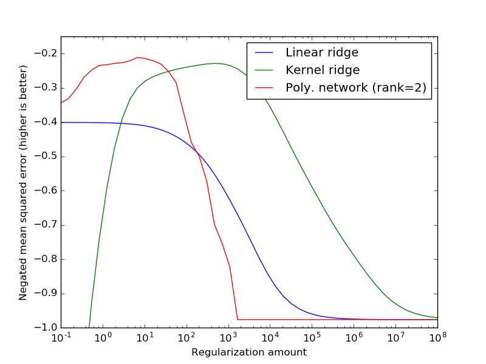

In this example we show how to use the warm_start attribute to efficiently compute the regularization path for a polynomial network when optimizing for the beta regularization hyperparameter.
Python source code: plot_regularization_path.py
print(__doc__)
# Author: Vlad Niculae <vlad@vene.ro>
# License: Simplified BSD
import numpy as np
import matplotlib.pyplot as plt
from sklearn.linear_model import Ridge
from sklearn.kernel_ridge import KernelRidge
from sklearn.datasets import load_boston
from sklearn.cross_validation import train_test_split
from sklearn.metrics.scorer import mean_squared_error_scorer
from sklearn.preprocessing import StandardScaler
from polylearn import PolynomialNetworkRegressor
boston = load_boston()
X, y = boston.data, boston.target
data_split = train_test_split(X, y, test_size=100, random_state=0)
X_train, X_test, y_train, y_test = data_split
# Scale both the features (X) and the target (y) to zero mean, unit variance
# (This is not necessary but makes the plots clearer)
scaler_X = StandardScaler(with_mean=True, with_std=True)
X_train_sc = scaler_X.fit_transform(X_train)
X_test_sc = scaler_X.transform(X_test)
scaler_y = StandardScaler(with_mean=True, with_std=True)
y_train_sc = scaler_y.fit_transform(y_train.reshape(-1, 1)).ravel()
y_test_sc = scaler_y.transform(y_test.reshape(-1, 1)).ravel()
n_alphas = 50
alphas = np.logspace(-1, 8, n_alphas)
ridge = Ridge(fit_intercept=True)
kernel_ridge = KernelRidge(kernel='poly', gamma=1, degree=3, coef0=1)
test_scores_ridge = []
test_scores_kernel = []
for alpha in alphas:
ridge.set_params(alpha=alpha)
ridge.fit(X_train_sc, y_train_sc)
test_mse = mean_squared_error_scorer(ridge, X_test_sc, y_test_sc)
test_scores_ridge.append(test_mse)
kernel_ridge.set_params(alpha=alpha)
kernel_ridge.fit(X_train_sc, y_train_sc)
test_mse = mean_squared_error_scorer(kernel_ridge, X_test_sc, y_test_sc)
test_scores_kernel.append(test_mse)
poly = PolynomialNetworkRegressor(degree=3, n_components=2, tol=1e-3,
warm_start=True, random_state=0)
test_scores_poly = []
for alpha in alphas:
poly.set_params(beta=alpha)
poly.fit(X_train_sc, y_train_sc)
test_mse = mean_squared_error_scorer(poly, X_test_sc, y_test_sc)
test_scores_poly.append(test_mse)
plt.plot(alphas, test_scores_ridge, label="Linear ridge")
plt.plot(alphas, test_scores_kernel, label="Kernel ridge")
plt.plot(alphas, test_scores_poly, label="Poly. network (rank=2)")
plt.ylabel("Negated mean squared error (higher is better)")
plt.xlabel("Regularization amount")
plt.ylim(-1, -0.15)
plt.semilogx()
plt.legend()
plt.show()
Total running time of the example: 1387.23 seconds ( 23 minutes 7.23 seconds)